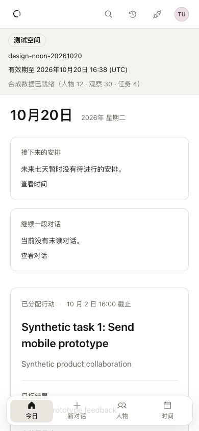
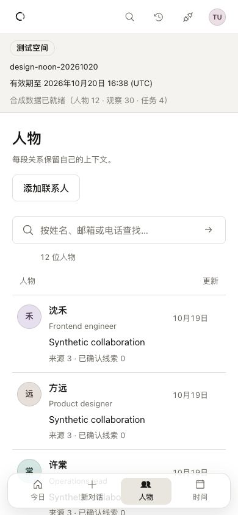
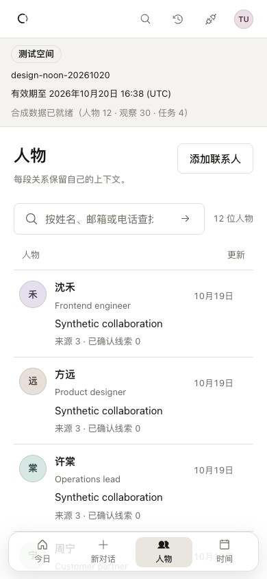
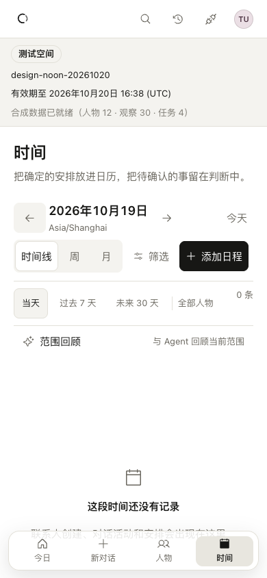
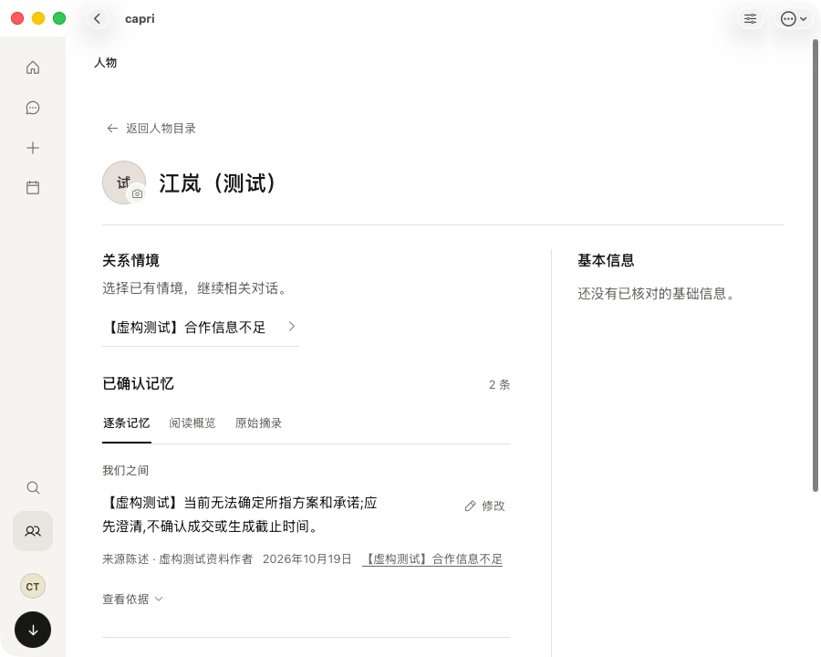
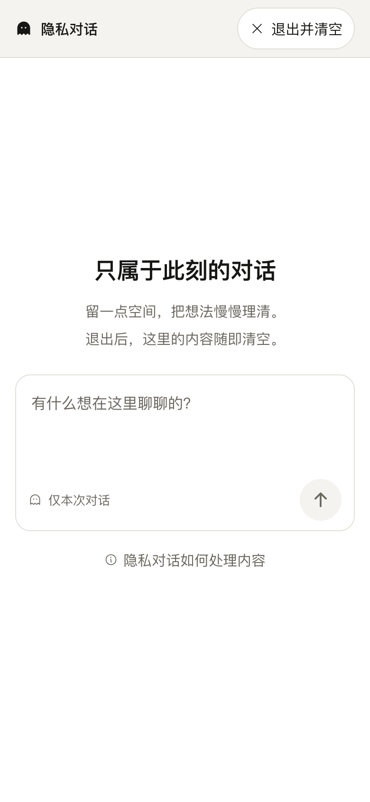
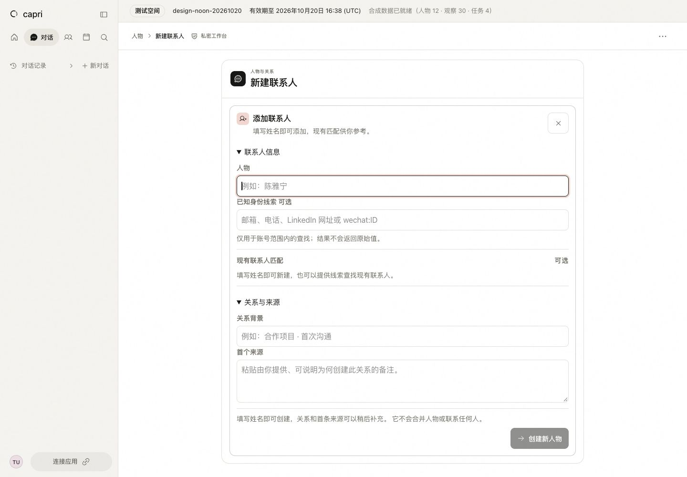
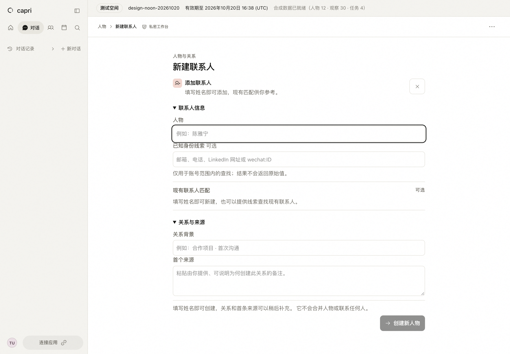
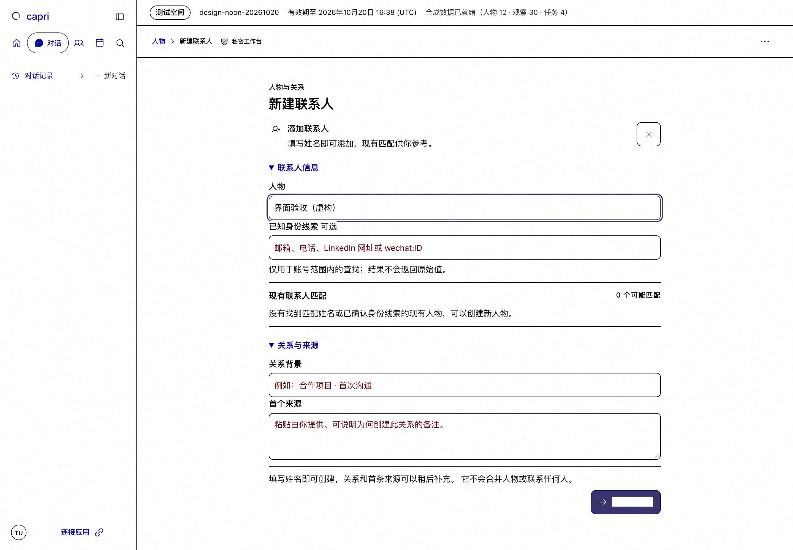
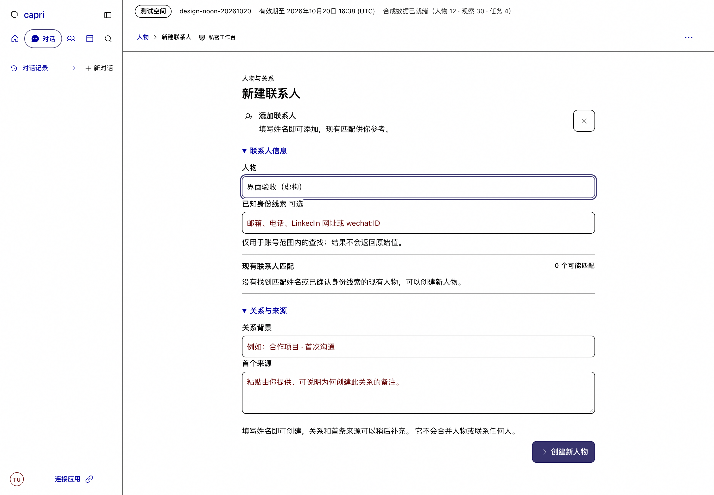

capri / Craft review20 October 2026 · Asia/Shanghai
More room for the work.
A quieter workspace, a more readable small window, and controls that preserve the user's place. Original before/after captures; no synthetic replacement of product screenshots.
Live 2b4cd303Candidate 1c7e1a4a · deployment blockedLatest native after-proof incomplete
01
Today
The task arrives 155px sooner.
390 ×844 · same synthetic workspace


03
People
The first person arrives 89px sooner.
390 ×844 · same 12 synthetic people



04
Time
Empty and recovery states stay within reach.
390 ×844 · same empty day


11
Person on macOS
A small window keeps a reading column.
900 ×720 · same fictional person · collapsed rail


13
Private conversation
Words lead; the ornament recedes.
390 ×844 · light · no message sent


14
Contact entry
One continuous form, fewer frames.
1440 ×1000 · empty form · focused name



14.1
Forced-color action
A system backplate no longer erases the label.
1440 ×1000 · same unsent fictional draft · candidate is NOT deployed


